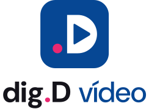
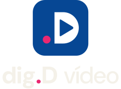

logo · fundo claro

logo.svglogo · fundo escuro (a tela do editor)

logo-negativo.svgtamanho real · 16 · 24 · 32 · 64 · 128
paleta · 60 / 30 / 10
#064794produto · botão · seleção#EA2871a ação que decide · o ponto#FFD413agulha#0A1024#F4F1E9#15141BDM Mono 00:42.18cabeçalho do README · GitHub claro e escuro
na tela · tokens.css aplicado